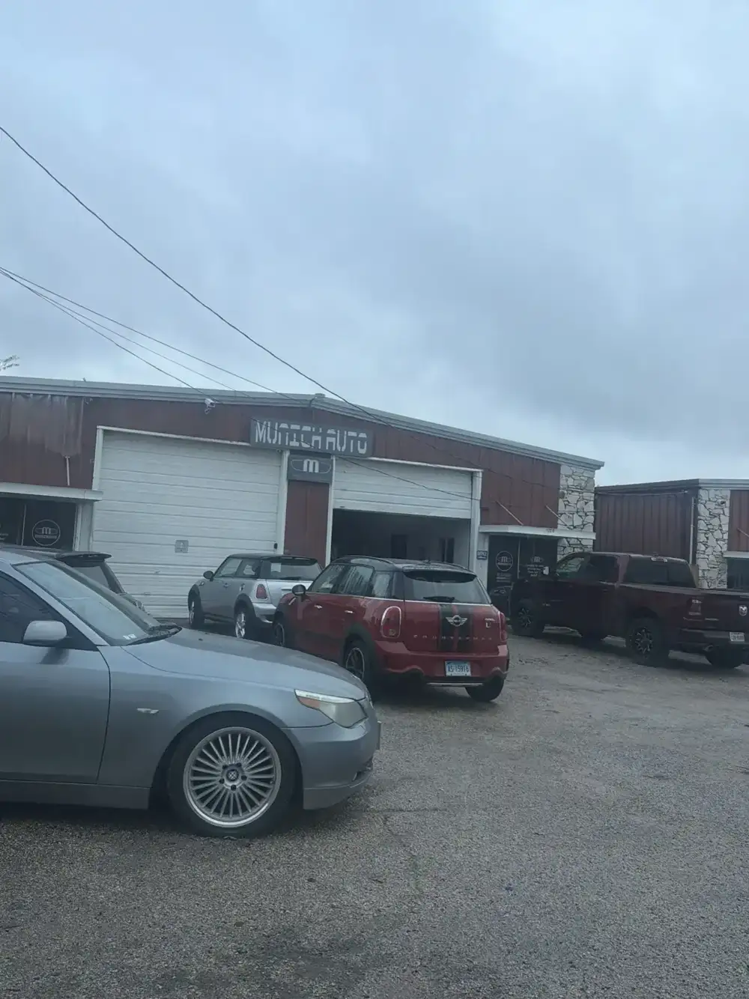
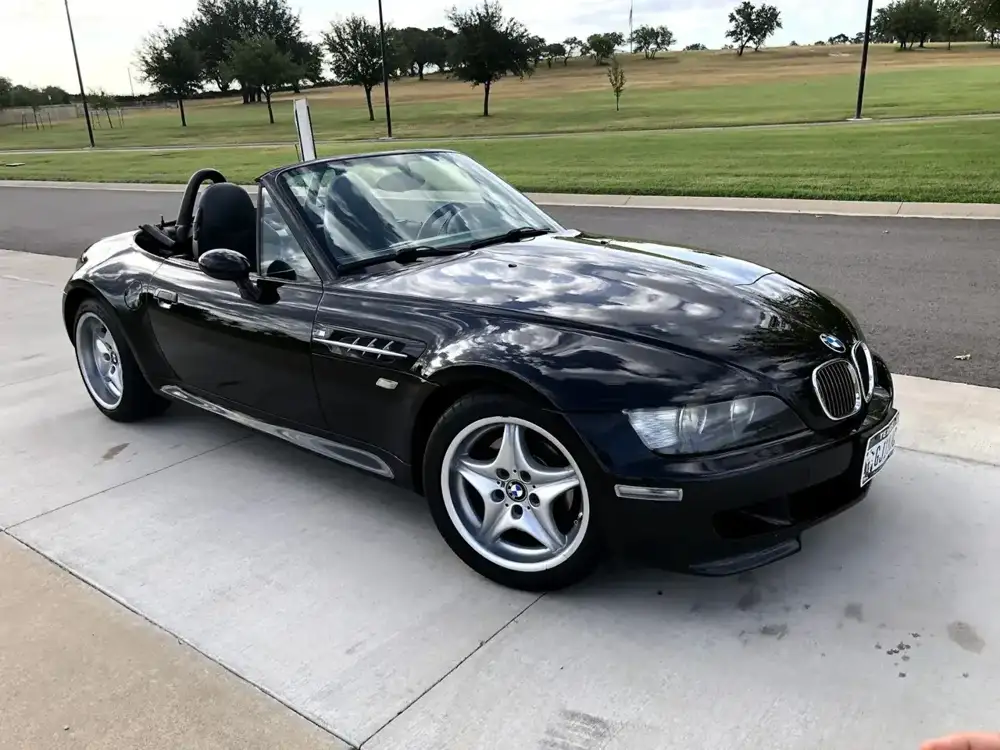
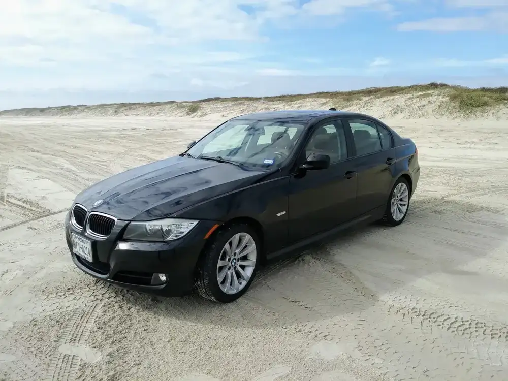
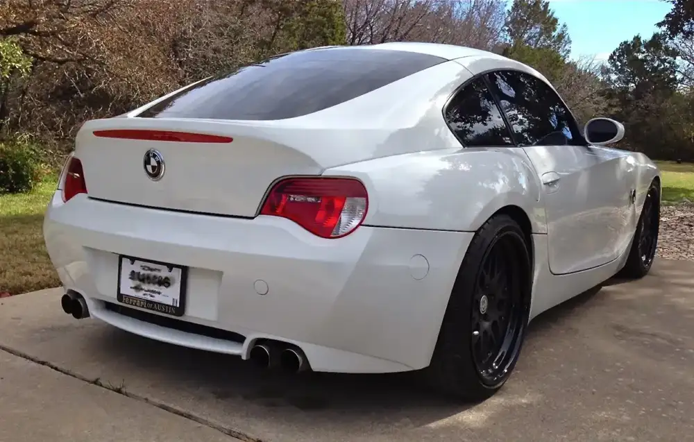
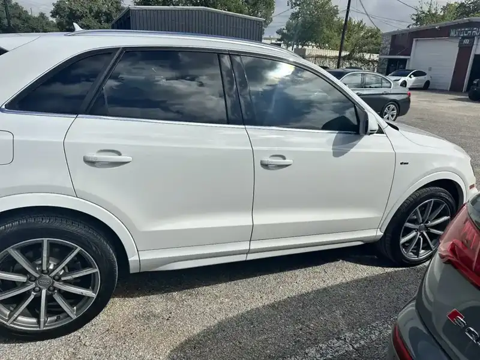
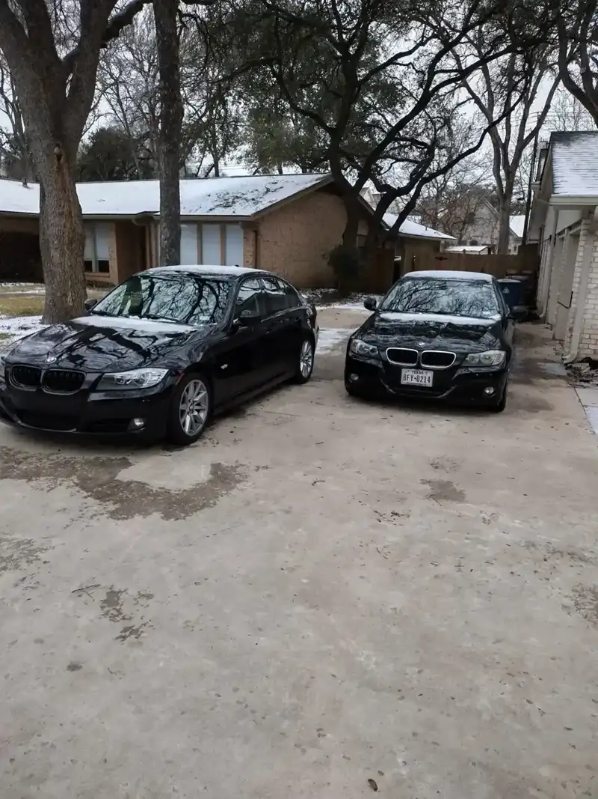

Maintenance
Regular BMW and Mini service, kept on schedule.
BMW, Mini, Scheduled serviceBMW & Mini specialists · Roxie Dr, Austin
Maintenance, repair and diagnostics on BMW and Mini. Call to book a time.

By appointment
(04) About

A small shop in a red-metal unit on Roxie Dr. BMW and Mini are the work.
We tell you what needs attention and what can wait. Then we do it right.
(01) Services
Maintenance, repair and diagnostics for German cars.
Regular BMW and Mini service, kept on schedule.
BMW, Mini, Scheduled serviceBrakes, engine and the rest, fixed once and explained.
Brake repair, Engine repair, DrivabilityA diagnostic scan to pinpoint the cause of a warning light.
Check engine light, Noises, Rough idle(02) The workshop






(03) Clients
1I’ve taken my BMW to Ray twice now, and both times were outstanding. First, he correctly diagnosed in minutes what two other shops had missed and fixed it for a fair price. The second time was a major engine issue. He kept me updated with photos, stayed late to tackle an additional problem that only showed up once he was in there, and didn’t even add to the bill for that extra work.
2I’ve been going to Munich Auto for about 2 years now, Ray & his team are absolutely fantastic! They do all the general maintenance on my BMWs and repairs when needed. Pricing is great & I usually get my cars back same day. 10/10 would recommend to anyone who is looking to get repairs on their BMW done new or old!
3Honesty means everything to me, and knowledge does as well. I took my X3 to do some maintenance suggested by the dealer: a front and rear differential flush. It was done quickly and very professionally, and I had the advantage of dropping off my car the night before with peace of mind. The flush was reasonable and affordable compared to the outrageous dealer prices.
Hours & directions
12219A Roxie Dr, Austin, TX 78729
Appointments only. Call ahead and we'll set a time.